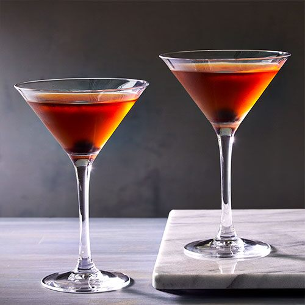

Old Fashioned
One of the great classic bourbon cocktails, the Old Fashioned was invented in Louisville, KY. Try bourbon, rye, or a blended whiskey in this cocktail. You can also sub one sugar cube for the simple syrup.
One of the great classic bourbon cocktails, the Old Fashioned was invented in Louisville, KY. Try bourbon, rye, or a blended whiskey in this cocktail. You can also sub one sugar cube for the simple syrup.
A gin and tonic or, less frequently, gin tonic is a highball cocktail made with gin and tonic water poured over a large amount of ice. ... The ice cools the gin, dulling the effect of the alcohol in the mouth and making the drink more pleasant to taste.
A margarita is a cocktail consisting of tequila, orange liqueur, and lime juice often served with salt on the rim of the glass. The drink is served shaken with ice (on the rocks), blended with ice (frozen margarita), or without ice (straight up).

The Manhattan was the most famous cocktail in the world shortly after it was invented in New York City’s Manhattan Club, some time around 1880 (as the story goes). Over the years, the whiskey classic has dipped in and out of fashion before finding its footing as one of the cornerstones of the craft cocktail renaissance.
